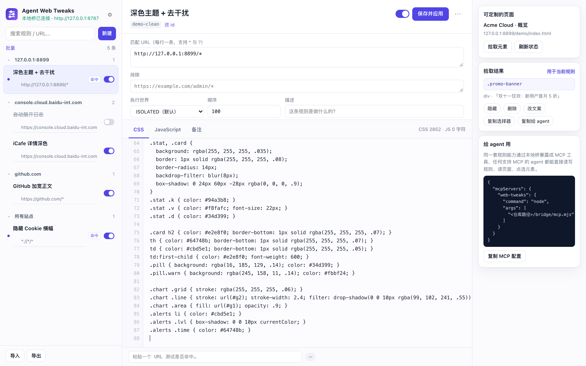
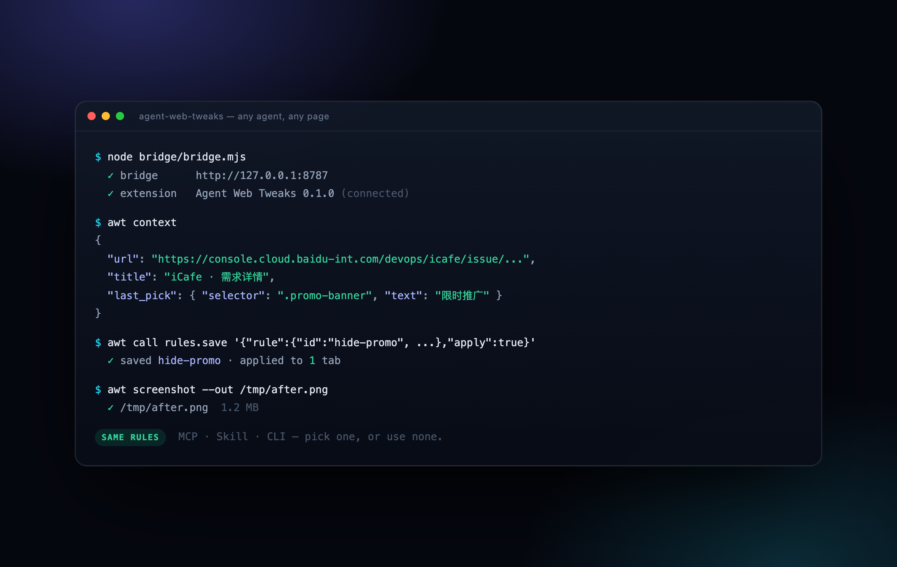

一条规则 = URL + CSS/JS。保存即生效，关掉浏览器也还在；
同一套能力通过 MCP / Skill / CLI 交给任何 agent。
Stylus 只会改 CSS，Tampermonkey 要写元数据、手动维护脚本；而 agent 想改网页时，缺的是一条能留下结果的通道。
在页面上点一下元素，自动拿到稳定选择器，一键生成「隐藏 / 删除 / 改文案」规则，不用记 CSS 类名。
规则注册成 document_start 的 userScript，刷新、SPA 路由切换、重开浏览器都自动生效，首屏不闪。
规则存在本地、结构固定，MCP / Skill / CLI 都能读写；agent 读完页面就能直接写规则、应用、截图确认。
chrome://extensions → 开发者模式 → 加载已解压的扩展程序// 也可以直接写规则 { "id": "hide-promo", "name": "去掉推广位", "match": ["https://example.com/*"], "css": ".promo-banner { display: none !important; }", "js": "" }

扩展通过本地桥暴露 18 个工具：读页面、拾取元素、执行 JS、截图、增删改规则。接 MCP、装成 skill、或者直接 curl。

# MCP { "mcpServers": { "web-tweaks": { "command": "node", "args": ["<repo>/bridge/mcp.mjs"] } } } # Skill node skill/install.mjs node ~/.codex/skills/web-tweaks/scripts/awt.mjs status # CLI / curl awt context awt call rules.save '{"rule":{"id":"hide-promo","match":["https://example.com/*"],"css":".promo{display:none}"},"apply":true}'
git clone <repo-url> agent-web-tweaks # chrome://extensions → 开发者模式 → 加载已解压的扩展程序 → 选这个目录 # 可选：node bridge/bridge.mjs # 给 agent 用的本地桥
需要 Chrome 120+。规则只存在本机 chrome.storage.local，不会上传。